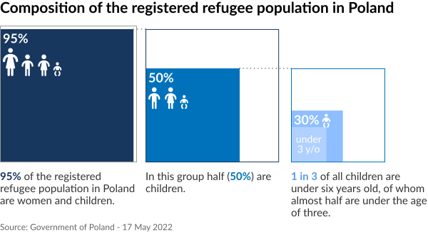
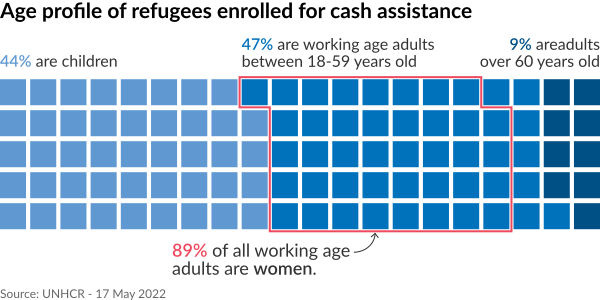

Childcare solutions urgently needed for Ukrainian refugees
1 June 2022
Beginning on 24 February 2022, the war in Ukraine has led to a massive outflow of refugees throughout Europe.
The defining characteristic of this refugee movement is that the overwhelming majority of those fleeing are women and children, accounting for an unprecedented 95 per cent of the recently arrived refugee population from Ukraine in neighbouring countries. A comprehensive age/sex breakdown of the entire Ukrainian refugee population is not available due to the various countries involved and the numerous cross border movements. Nevertheless, every significant data collection exercise shows the same pattern across countries.
As an example, when looking at the 1.1 million Ukrainian refugees who have registered for temporary protection in Poland, 48 per cent are women over 17 years old. Another 47 per cent are children under 18 years old. Nearly a third of these children are under six years old, of whom almost half are under the age of three.

In a separate exercise, as of 17 May some 136,000 Ukrainian refugees have been enrolled for UNHCR cash assistance in Moldova, Poland, Romania and Slovakia. Of these, 43 per cent are working age women between the ages of 18 and 59. Women comprise a staggering 89 per cent of all working age adults.

Effective access to childcare and early education opportunities is unquestionably one of the most pressing needs facing refugee families, many of whom face prolonged separation from husbands and fathers. Kindergartens in host communities are under enormous strain, while public childcare facilities are either non-existent or unable to respond to the existing needs of host communities. Without access to childcare, refugee women will struggle to gain meaningful employment.
Comprehensive childcare solutions should be accompanied by a set of more traditional socioeconomic inclusion measures. For this reason, UNHCR and the OECD launched Engaging with employers in the hiring of refugees: A 10 point multi-stakeholder action plan. It outlines a number of steps to be taken to ensure the inclusion of refugees in the workforce, including language courses, skills assessment, recognition and upskilling, information and counselling, job readiness courses, job matching, preparation of the workplace, creating an evidence-base and a coordinated multi-stakeholder approach.
UNHCR emergency page Operational Data Portal